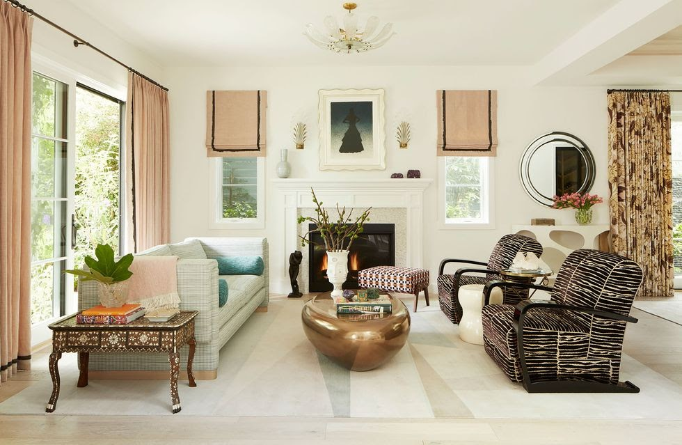

"La que se va a liar". Cuentan que, cuando Juan Miguel Ferrer, hasta el próximo sábado deán de la catedral de Toledo, vio el videoclip 'Ateo' de C. Tangana y Nathy Peluso, rodado con su permiso en la catedral primada, se llevó una mano a la cabeza. Y no porque sintiera que lo visto era un sacrilegio –"Aunque se podían haber ahorrado tanto baile sensual", afirma un miembro del cabildo– sino porque sabía la que se le venía encima.
Un deán en las ternas para ser obispo
Tranquilo y sin retractarse
La historia deja ganadores y perdedores. Ganan indudablemente los artistas, cuyo videoclip lleva varios millones de reproducciones, alimentadas en parte por la polémica. También la catedral de Toledo, protagonista de titulares de prensa y minutos televisivos. No hay que olvidar que se paga por entrar al templo, excepto en horario de misa. Y, claro, los sectores más conservadores de la Iglesia española, que colocan una nueva muesca en su revólver de agitación. Pierden el deán dimisionario, el arzobispo atropellado por la presión reaccionaria y, en definitiva, esa otra 'alma' de la Iglesia española que sigue suspirando, en silencio, sin alzar la voz, por que la apertura que simboliza el papa Francisco pueda colarse por alguna rendija del episcopado de nuestro país. Los 'malos' vuelven a ganar. Otra vez.
La historia deja ganadores y perdedores. Ganan indudablemente los artistas, cuyo videoclip lleva varios millones de reproducciones, alimentadas en parte por la polémica. También la catedral de Toledo, protagonista de titulares de prensa y minutos televisivos. No hay que olvidar que se paga por entrar al templo, excepto en horario de misa. Y, claro, los sectores más conservadores de la Iglesia española, que colocan una nueva muesca en su revólver de agitación. Pierden el deán dimisionario, el arzobispo atropellado por la presión reaccionaria y, en definitiva, esa otra 'alma' de la Iglesia española que sigue suspirando, en silencio, sin alzar la voz, por que la apertura que simboliza el papa Francisco pueda colarse por alguna rendija del episcopado de nuestro país. Los 'malos' vuelven a ganar. Otra vez. La historia deja ganadores y perdedores. Ganan indudablemente los artistas, cuyo videoclip lleva varios millones de reproducciones, alimentadas en parte por la polémica. También la catedral de Toledo, protagonista de titulares de prensa y minutos televisivos. No hay que olvidar que se paga por entrar al templo, excepto en horario de misa. Y, claro, los sectores más conservadores de la Iglesia española, que colocan una nueva muesca en su revólver de agitación. Pierden el deán dimisionario, el arzobispo atropellado por la presión reaccionaria y, en definitiva, esa otra 'alma' de la Iglesia española que sigue suspirando, en silencio, sin alzar la voz, por que la apertura que simboliza el papa Francisco pueda colarse por alguna rendija del episcopado de nuestro país. Los 'malos' vuelven a ganar. Otra vez. La historia deja ganadores y perdedores. Ganan indudablemente los artistas, cuyo videoclip lleva varios millones de reproducciones, alimentadas en parte por la polémica. También la catedral de Toledo, protagonista de titulares de prensa y minutos televisivos. No hay que olvidar que se paga por entrar al templo, excepto en horario de misa. Y, claro, los sectores más conservadores de la Iglesia española, que colocan una nueva muesca en su revólver de agitación. Pierden el deán dimisionario, el arzobispo atropellado por la presión reaccionaria y, en definitiva, esa otra 'alma' de la Iglesia española que sigue suspirando, en silencio, sin alzar la voz, por que la apertura que simboliza el papa Francisco pueda colarse por alguna rendija del episcopado de nuestro país. Los 'malos' vuelven a ganar. Otra vez. La historia deja ganadores y perdedores. Ganan indudablemente los artistas, cuyo videoclip lleva varios millones de reproducciones, alimentadas en parte por la polémica. También la catedral de Toledo, protagonista de titulares de prensa y minutos televisivos. No hay que olvidar que se paga por entrar al templo, excepto en horario de misa. Y, claro, los sectores más conservadores de la Iglesia española, que colocan una nueva muesca en su revólver de agitación. Pierden el deán dimisionario, el arzobispo atropellado por la presión reaccionaria y, en definitiva, esa otra 'alma' de la Iglesia española que sigue suspirando, en silencio, sin alzar la voz, por que la apertura que simboliza el papa Francisco pueda colarse por alguna rendija del episcopado de nuestro país. Los 'malos' vuelven a ganar. Otra vez.
24=16Elemento 1
Elemento 2
Elemento 3
Elemento 4
| A | ||
|---|---|---|
| B | C | |
| D | ||
| E | F | |
| DIA | L | M | X | J | V |
|---|---|---|---|---|---|
| 8:25-9:20 | DAW | DAW | EIE | DWES | |
| 9:20-10:15 | DWEC | ||||
| 10:15-11:10 | DWEC | DIW | EIE | DIW | |
| 11:30-12:25 | DAW | DIW | |||
| 12:25-13:20 | DWES | DWEC | EIE | ||
| 13:20-14:15 | DIW | DAW | DIW | ||